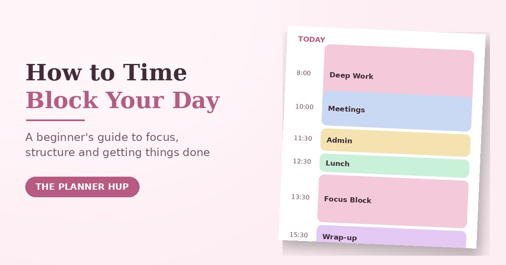

Time Blocking: How to Plan Your Day So Every Hour Has a Job

Most to-do lists fail quietly. You write down eight tasks, the day fills up with meetings and messages, and by evening you have done none of the eight things you actually meant to do. Nothing on the list ever said when it would happen, so it competed with everything else for the same unplanned hour, and lost.
Time blocking fixes that by giving every task a home on your calendar before the day starts. This guide covers what time blocking actually is, how it differs from time boxing and task batching, a beginner routine that will not collapse by Wednesday, a sample schedule, and the mistakes that make most people quit in the first week.
What Is Time Blocking?
Time blocking is a time management method where you divide your day into blocks of time and assign a specific task, or a type of work, to each block. Instead of an open-ended list of things you hope to get to, every task gets a planned slot: 9 to 11 for deep work, 11 to 12 for meetings, 1 to 3 for admin. When the hour arrives, the decision about what to do is already made, so you are not negotiating with yourself all day.
The method itself is old. It is the same basic idea behind blocking out "office hours" or "study hours" on a calendar, and it became widely popular again through productivity writers such as Cal Newport, who built it into the center of focused, distraction-free work. What has changed is that calendars are now smart enough to help: many people now build their blocks digitally as well as on paper, though the underlying method has not changed at all.
Time Blocking vs. Time Boxing vs. Task Batching
These three terms get mixed up constantly. They are related, but they solve different problems, and knowing the difference makes all three easier to use well.
| Method | What it controls | Example |
|---|---|---|
| Time blocking | When you do something | "9-11am is deep work on the report." |
| Time boxing | How long you spend on something | "I'll spend exactly 45 minutes on email, then stop." |
| Task batching | Grouping similar small tasks | Replying to all messages in one sitting instead of all day. |
In practice they combine well: you time-block a slot for "admin," time-box it to 30 minutes so it cannot expand to fill the whole afternoon, and use task batching inside that slot to group similar small jobs together. You do not have to pick only one.
Why Time Blocking Works
- It forces prioritizing. A calendar has a fixed number of hours, so putting a task on it forces you to decide what actually matters enough to earn a slot.
- It protects focus. One block, one task, means less switching between unrelated jobs, which is where a lot of a day's time quietly disappears.
- It shows you the whole day at once. A to-do list hides how full your day already is. A blocked calendar makes an overloaded day obvious before it starts, not at 4pm.
- It reduces decision fatigue. When the block arrives, the choice of what to do is already made, so you spend less energy deciding and more energy doing.
How to Start Time Blocking: A Beginner Routine
The most common reason time blocking fails is trying to do too much of it too soon: blocking every single minute, missing the plan by 10am, and abandoning the whole idea by lunch. Start smaller than feels necessary.
- List fixed commitments first. Classes, meetings, prayer times, school runs, anything with a set time goes on the calendar before anything else.
- Choose two or three priorities for the day. Not eight. Two or three things that would make today a success if nothing else got done.
- Find your peak hours. Put your hardest or most important priority in the part of the day when you naturally have the most focus, not whenever a gap happens to appear.
- Group the rest into two to four blocks. Do not create a new block for every small task. Batch similar smaller tasks (messages, errands, admin) into one block instead of scattering them through the day.
- Add a buffer block. Leave at least one unplanned slot for whatever runs long or comes up unexpectedly. Without a buffer, one delay knocks over the rest of the day like dominoes.
- Review at the end of the day. Move anything unfinished into tomorrow's plan rather than stretching today's block later and later. A short daily review is what makes next week's plan more realistic than this week's.
A Sample Time-Blocked Day
There is no single correct schedule. This is a realistic starting template you can adjust to your own hours, energy and commitments.
| Time | Block | Notes |
|---|---|---|
| 8:00 – 8:30 | Plan the day | Pick 2-3 priorities; everything else waits |
| 8:30 – 10:00 | Deep work | Your hardest task, during your peak-focus hours |
| 10:00 – 10:30 | Messages & replies | Batch it; don't leave it open all day |
| 10:30 – 12:00 | Second priority | Still a focused block, slightly lower energy needed |
| 12:00 – 13:00 | Lunch & break | Scheduled on purpose, not squeezed in |
| 13:00 – 14:30 | Meetings / calls | Grouped together instead of scattered |
| 14:30 – 15:30 | Admin / errands | Batched small tasks |
| 15:30 – 16:00 | Buffer | For anything that ran over today |
| 16:00 – 16:15 | Review & plan tomorrow | Five minutes, not skipped |
Notice the schedule is not packed edge to edge. The buffer block and the shorter review are part of the design, not a failure to plan tightly enough.
How Long Should a Time Block Be?
There is no universal number, but a few ranges work for most people:
- 60-90 minutes for focused or creative work — long enough to get past the slow start, short enough to sustain concentration.
- 15-30 minutes for routine tasks like messages, quick admin or a to-do sweep.
- 25 minutes on, 5 off (the Pomodoro pattern) if you find long blocks hard to sustain, especially when starting out.
If you consistently overrun a block, the block is probably too short for that task, not a sign that you are bad at time blocking. Adjust the length before you abandon the method.
Time Blocking for Students, Work and Home
For students
Block classes and fixed commitments first, then add one focused block per subject rather than one vague "study" block for everything. Put revision before an exam in your peak-focus hours, not squeezed in late at night. The Student Planner 2026 and Student Full Year Planner are both built around the same idea of giving each responsibility its own space.
For work
Group meetings onto fewer days where possible to protect longer, uninterrupted blocks for real work. Batch messages into two or three fixed windows instead of checking them continuously between blocks, which quietly cancels out the whole benefit of blocking your time in the first place.
For home and family
Block errands, meals and family time the same way you would block work, including at least one block that is only for you. If you want your whole week mapped out this way rather than one day at a time, our guide to choosing and using a free printable weekly planner pairs naturally with daily time blocking.
6 Mistakes That Make People Quit Time Blocking
- Blocking every single minute. A schedule with no breathing room breaks the first time anything runs long, which is most days.
- Underestimating how long tasks take. Track your real time for a few days if your blocks keep overrunning; most first attempts are too optimistic.
- Ignoring your energy levels. Scheduling your hardest task for your lowest-energy hour sets the whole day up to fail.
- Treating the plan as unchangeable. A time block is a plan, not a promise. Adjust it during the day rather than abandoning the whole system over one disruption.
- No buffer block. Without slack somewhere in the day, one delay pushes into the next block, and then the next, until the schedule means nothing by 2pm.
- Quitting after one bad day. The first week of any new system is the least accurate. Adjust the block lengths and try again rather than deciding the method itself does not work.
Try Our Free Time Blocking Planner
If you would like to put this into practice today, our free time blocking tool lets you lay out your day in blocks right in your browser, print it, or keep it as a simple daily reference. It is free to use as often as you like.
Frequently Asked Questions
What is time blocking?
Time blocking is a time management method where you divide your day into blocks and assign a specific task, or a type of work, to each one on your calendar. Instead of working from an open-ended to-do list, you decide in advance when each piece of work happens, so every hour has a clear job.
What is the difference between time blocking and time boxing?
Time blocking decides when you will work on something: for example, deep work from 9 to 11. Time boxing decides how long you will spend on something regardless of when: for example, 45 minutes on email triage, stopping when the time is up. Time blocking schedules your day; time boxing limits a task. Many people use both together.
What is the difference between time blocking and task batching?
Time blocking structures your whole day into scheduled blocks for different kinds of work. Task batching is a technique you can use inside a block: grouping small, similar tasks, such as replying to messages, into one session instead of doing them throughout the day. Task batching is usually one ingredient of a time-blocked schedule, not a separate system.
How do I start time blocking as a beginner?
Start small: list your fixed commitments first, choose two or three priorities for the day, group them into two to four blocks rather than a block for every task, add a buffer block for overflow, and review at the end of the day. Trying to block every single minute in your first week is the most common reason people quit.
Is time blocking good for students?
Yes. Students can block classes and fixed commitments first, then add dedicated blocks for each subject, assignments and revision, plus at least one buffer block for the unexpected. Our free time blocking planner and Student Planner 2026 both use this same block structure.
How long should a time block be?
Most people find 60 to 90 minutes works well for focused work, since it is long enough to get into a task but short enough to sustain concentration. Routine tasks such as email can be shorter, 15 to 30 minutes. The right length is whatever you can realistically sustain without needing to stop.
What are common time blocking mistakes?
The most common mistakes are blocking every single minute with no buffer, underestimating how long tasks take, ignoring energy levels by scheduling hard tasks at low-focus times, treating the schedule as unchangeable, and quitting after the first day it does not go to plan.
Do I need an app for time blocking?
No. Time blocking works with a paper planner, a printable template, a digital calendar, or a spreadsheet. What matters is that you can see your whole day at a glance and are consistent about planning it in advance, not which tool you use.
Open the Time Blocking Planner Or plan your whole week